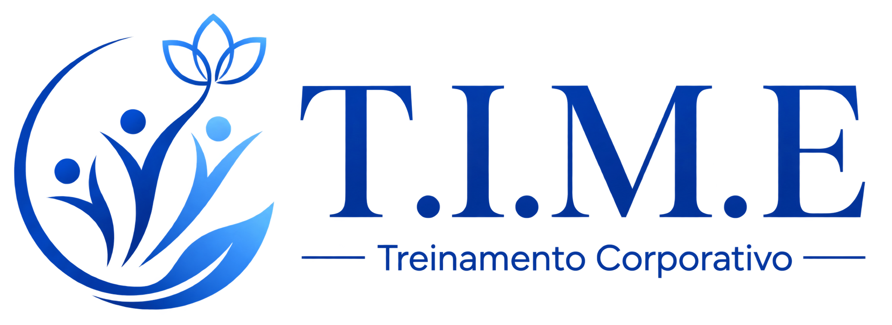
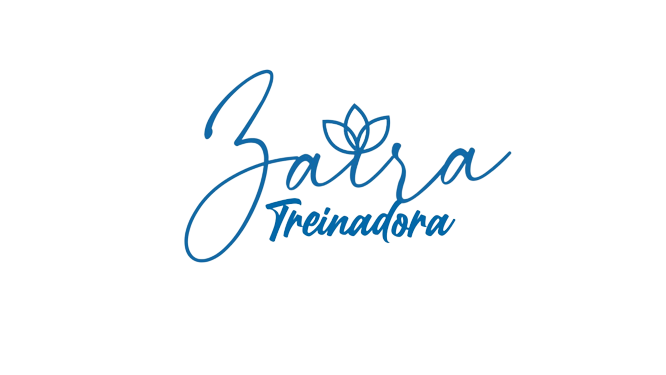
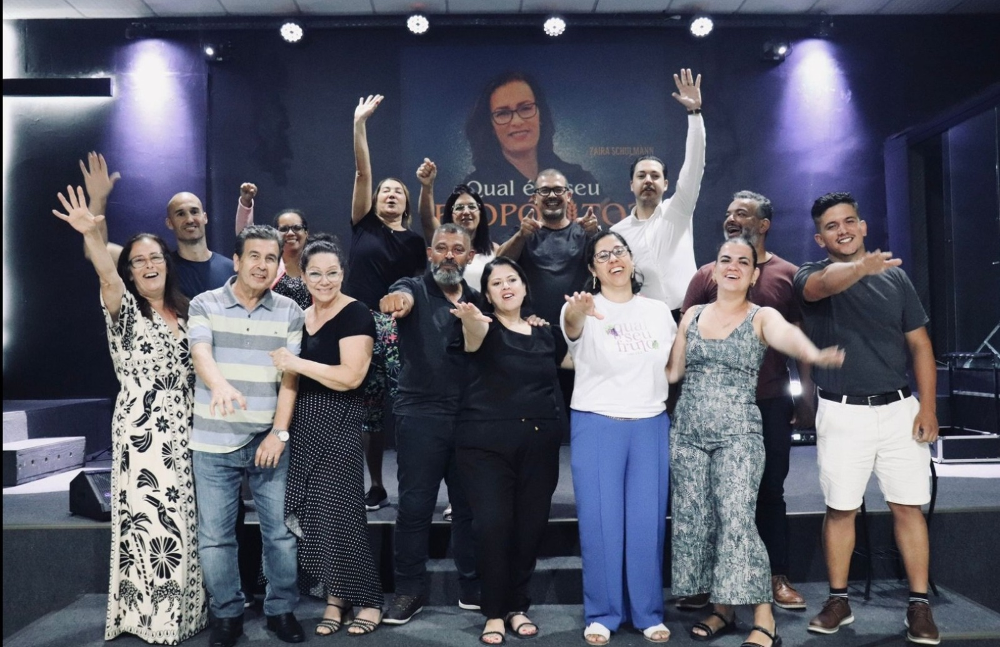
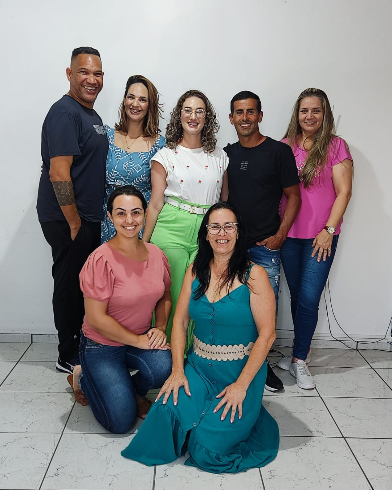
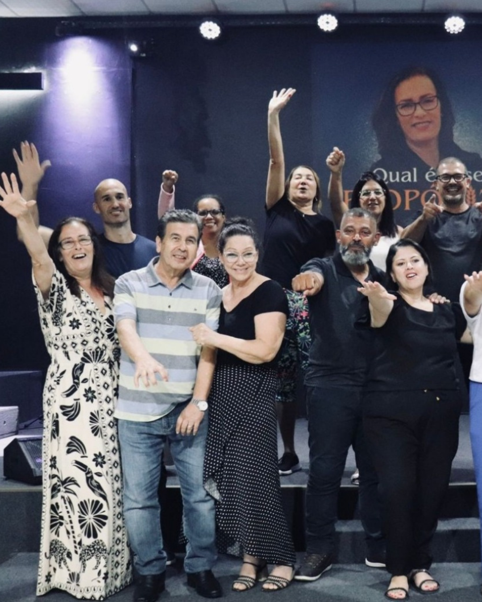
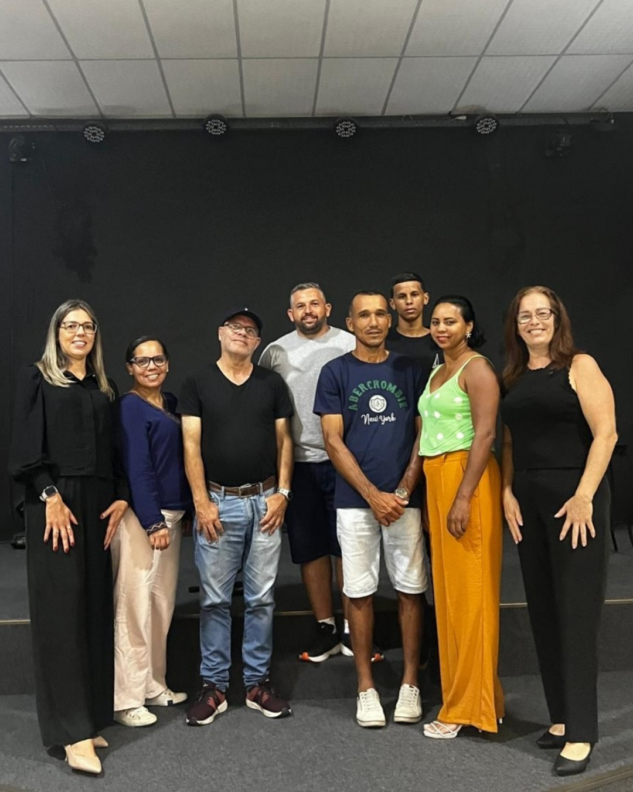
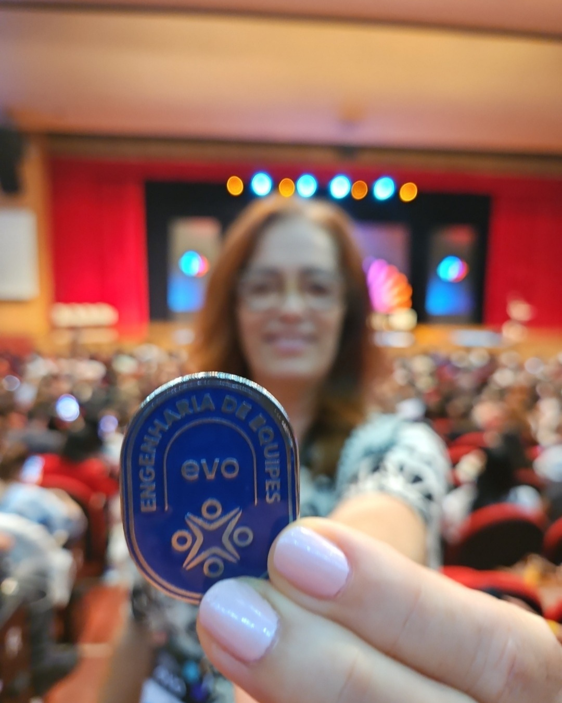

Mentalidade estratégica e positiva


Sua equipe parou
de remar para o
mesmo lado?
Descubra a lógica, foco e disciplina que faltam.
Forme líderes. Gere resultados.
Transformamos equipes em times comprometidos com uma visão clara, trabalhando com foco e responsabilidade em resultados.
Quero potencializar minha equipe◌
Conheça sua treinadora
Zaira, Treinadora do T.I.M.E.
Experiência em liderança, gestão e alta performance para transformar equipes em times mais unidos, focados e preparados para gerar resultados.
Quando falta alinhamento,
o resultado aparece.
- Comunicação com ruídos
- Conflitos recorrentes
- Líderes sobrecarregados
- Falta de compromisso
- Resultados abaixo do potencial
Talvez sua equipe não
precise trabalhar mais.
Talvez precise aprender
a trabalhar melhor, juntos
e na mesma direção.
Conheça o
T.I.M.E. em ação
Assista ao vídeo e veja
na prática como
transformamos
equipes em TIMES
de alta performance
e impacto.

▶A lógica do T.I.M.E.
◉Consciência→♙Comportamento→◎Alinhamento→♟Cultura→↗Resultado
Diagnóstico real, treinamentos práticos e acompanhamento
para fortalecer pessoas, equipes e resultados.
Os pilares que sustentam a transformação
Conexões humanas que fortalecem
Líderes que inspiram e desenvolvem
Times unidos com clareza e método
Valores que orientam decisões
Disciplina e execução que trazem ROI
Momentos do treinamento



